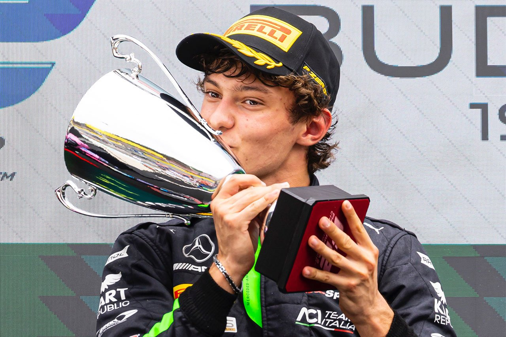

PILOTOS FAVORITOS
FRANCO COLAPINTO
(Pilar, 27 de mayo de 2003) es un piloto de automovilismo argentino. Fue campeón del Campeonato de España de F4 en 2019, y tercero en los campeonatos de Toyota Racing Series y Eurocopa de Fórmula Renault (ambos en 2020), Asian Le Mans Series (2021), cuarto en el Campeonato de Fórmula 3 de la FIA (2023), y compitió en el Campeonato de Fórmula 2 de la FIA con el equipo MP Motorsport durante diez rondas en 2024

CHECO PEREZ
Un piloto de automovilismo mexicano. Actualmente es miembro de la Escudería Telmex.[1] Entre 2021 y 2024 fue piloto de Red Bull en Fórmula 1, donde obtuvo sus mejores resultados en el campeonato, con un subcampeonato en 2023, un tercer puesto en 2022 y dos cuartos lugares en 2020 (con Racing Point) y 2021. Comenzó su carrera en 2004; en la Fórmula 3 Británica fue campeón de clase nacional en 2007. En 2009 debutó en GP2 Series y al año siguiente fue subcampeón.
.jpg )
CHARLES LECLER
Más conocido como Charles Leclerc, es un piloto de automovilismo monegasco.[4] Fue campeón de la Copa Mundial de Karting en 2011, y de GP3 Series en 2016 y del Campeonato de Fórmula 2 de la FIA en 2017, ambas como debutante. Debutó al año siguiente en Fórmula 1 con el equipo Sauber en 2018. Desde 2019 es piloto de la escudería Ferrari, resultando subcampeón en 2022, y tercero en 2024. .

KIMI ANTONELI un piloto de automovilismo italiano.Entre 2019 y 2024 fue miembro del Equipo Júnior de Mercedes. En 2025 es piloto titular de la escudería Mercedes en Fórmula 1, tras ser piloto reserva en 2024.
Ha sido cinco veces campeón de Europa en karting, de los campeonatos de Fórmula 4 Italiana, ADAC y de los Motorsport Games de la FIA en 2022, también se consagró campeón de la Fórmula Regional de Medio Oriente y de Europa en 2023

pagina principal